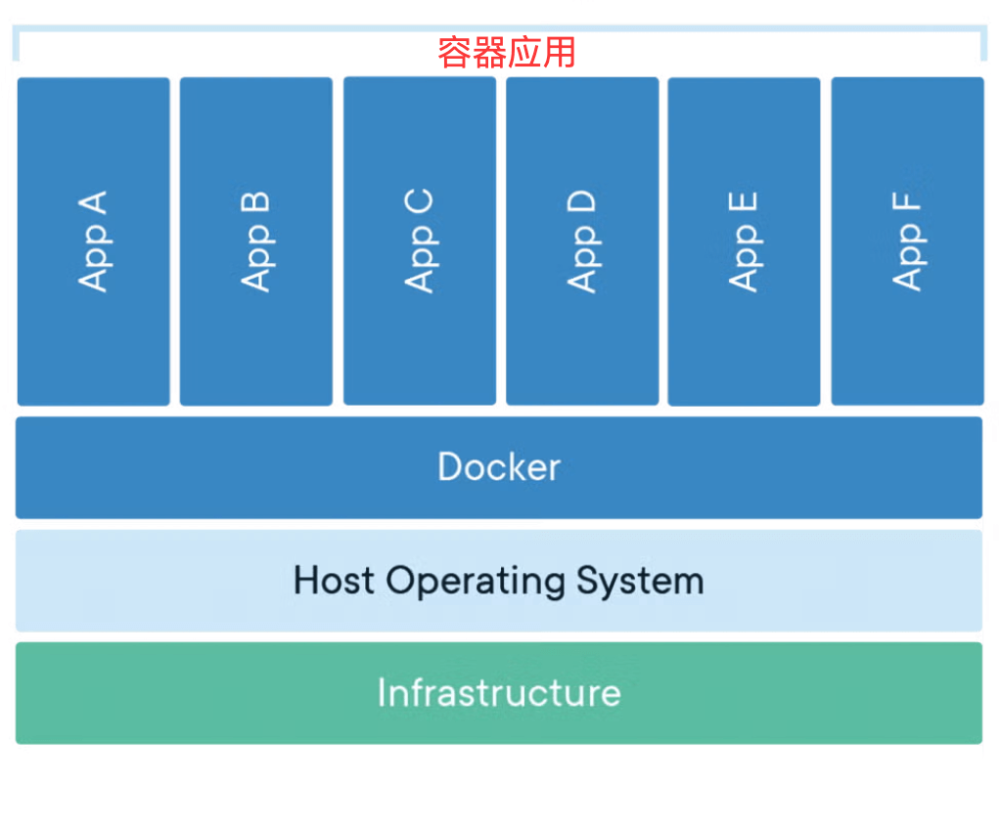
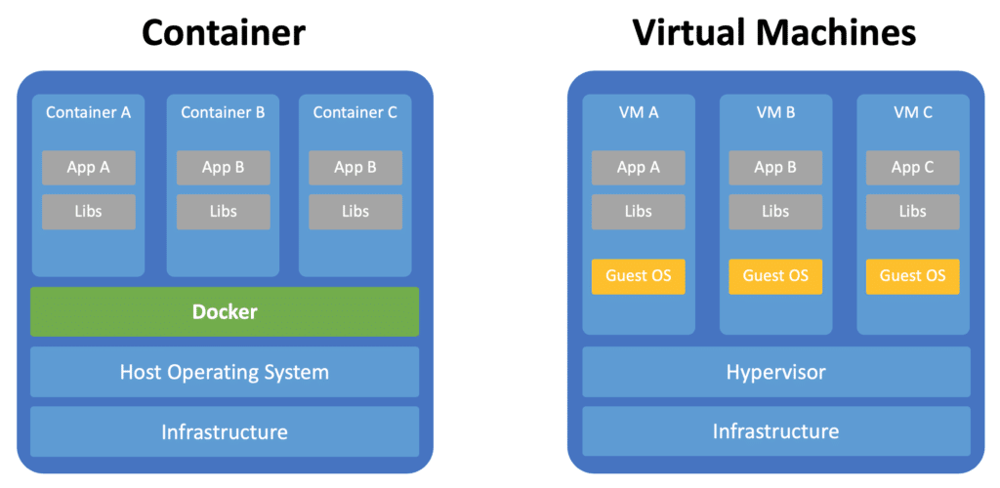

# Overview
1 | docker --help |
# What is Containerization?
容器共享主机内核，轻量、隔离且高效，不像虚拟机需要完整的操作系统，下图展示了 Docker 容器的基本架构：
- 上层 是多个容器（App A~F），每个容器独立运行一个应用。
- 中间层 是 Docker，负责管理这些容器。
- 底层 是主机操作系统（Host OS）和基础设施，为容器提供硬件和系统支持。

# Docker vs VM

| 特性 | VM | Docker Container |
|---|---|---|
| 隔离级别 | 硬件级别虚拟化 | 操作系统级别虚拟化 |
| 操作系统 | 每个 VM 需要完整 OS | 共享宿主机 OS 内核 |
| 资源占用 | 重量级，占用较多资源 | 轻量级，资源占用少 |
| 启动时间 | 分钟级别 | 秒级别 |
| 性能开销 | 较大 | 接近原生性能 |
| 镜像大小 | GB 级别 | MB 级别 |
# What is Docker?
Docker is an open platform for developing, shipping, and running applications. Docker enables you to separate your applications from your infrastructure so you can deliver software quickly. With Docker, you can manage your infrastructure in the same ways you manage your applications. By taking advantage of Docker's methodologies for shipping, testing, and deploying code, you can significantly reduce the delay between writing code and running it in production.
Docker 是一个用于开发、发布和运行应用程序的开放平台。Docker 允许您将应用程序与基础架构分离，从而快速交付软件。使用 Docker，您可以像管理应用程序一样管理基础架构。通过利用 Docker 的代码发布、测试和部署方法，您可以显著缩短从编写代码到在生产环境中运行代码的延迟。
总结下来，Docker 其实就是一个基于虚拟化技术的、用于 “打包” 和 “承载” 应用程序运行环境的工具。
现在看起来可能还一头雾水，不如让我们先来看看为什么要使用 Docker。
# Why Docker?
相信每一位程序员都经历过（甚至大部分时间都在经历）配环境的痛苦。在开发的过程中，我们会频频遇到以下问题：
- 依赖项冲突；
- 所运行的程序可能会修改一些不希望被修改的本机系统文件，甚至对系统有害；
- 软件开发过程中项目的频繁部署；
- 无法复现其他人的运行环境，如 {您配吗} 中提到的情况。
如果你即将 / 已经成为一名程序员，相信你已经或多或少感受过以上令人头大的场景，于是聪明的你想到：既然我们已经可以把执行任务的代码打包成应用程序，实现点击即用，那为什么不能把程序的运行环境也打包成某种东西（镜像），并通过某一载体（容器）来承载，从而也实现点击即用呢？
你可能听说过一种名为虚拟机的技术没听过也没关系，这是一种典型的虚拟化技术，它可以在同一台物理机上，模拟出多个虚拟机，它们各自拥有自己的计算资源和操作系统，相互之间可以隔离开来。应用程序（连带其运行环境）会运行在某一虚拟机内部，不会对其他虚拟机产生影响。并且，只要将运行该应用程序的虚拟机打包，其他人获得副本后，就可以直接运行相应的程序。
听起来很好，很符合我们的需求，对吧？但是如果你真的接触过一些虚拟机产品，就会知道，虚拟机往往体积十分庞大（毕竟包含一整个操作系统），占用的计算机资源较多，运行速度慢，性能也并不理想。若为每个应用程序都配置一个虚拟机，将会面临巨大的硬件成本，这显然是不可行的。
再仔细想想，仅仅为了运行一个特定的应用程序，我们真的需要一套独立的计算资源和操作系统吗？肯定不是的。其实，应用程序只关心自己所处的软件环境中是否含有所需的所有依赖，至于这一软件环境处于何种操作系统内、操作系统如何调用计算资源，与应用程序并无直接关系。所以，我们只需要为每个应用程序都提供一个虚拟化的软件环境就可以了，即便它们运行在同一个操作系统上，又使用同一套计算资源。
我们所要介绍的 Docker，就是这样的一个轻量级虚拟化技术。它将应用程序运行在容器（Container）中，容器直接运行在主机内核上，使用主机资源，并与外界（操作系统、其他容器）隔离，提供我们所需要的服务。
Docker 具有以下优势：
- 隔离与安全性：Docker 容器与外界隔离，（在正确配置下）基本不会干扰外界环境，保护系统和应用的安全性；
- 环境一致性：容器可以确保不同的合作开发者拥有完全相同的运行环境，避免出现 {您配吗} 的问题。
- 轻量化：容器无需独立的操作系统，占用的硬件资源较虚拟机少了很多，大量容器同时运行时仍能保证一定的性能。
# 基本概念
# Image
我们所使用的操作系统，往往分为内核和用户空间。Linux 内核启动后，会自动挂载 root 文件系统 /，以提供用户空间的支持。而 Docker 镜像就相当于一个 root 文件系统，只是包含了应用程序运行所需的所有东西。
《Docker 从入门到实践》中给出的对于镜像的定义：
Docker 镜像是一个特殊的文件系统，除了提供容器运行时所需的程序、库、资源、配置等文件外，还包含了一些为运行时准备的一些配置参数（如匿名卷、环境变量、用户等）。镜像不包含任何动态数据，其内容在构建之后也不会被改变。
镜像还有一个特性，就是分层存储。其使用 UnionFS（联合文件系统）技术，将不同文件系统联合挂载到同一个目录下。所以镜像只是一个虚拟的概念（而不是像 ISO 一样的一个打包文件），它实际上并不是一个文件，而是一组文件系统的组合。同理，镜像构建也是一层一层完成的，每一层构建完就不再发生改变，后一层上的任何改变（包括增加文件、删除文件等）都只发生在自己这一层。
以上内容可能还是有些抽象，现在不理解也没关系，后面介绍镜像构建时还会深入解释。
定义：镜像是一个只读的模板，包含了运行应用所需的所有内容：代码、运行时、库文件、环境变量和配置文件。
特点：
- 分层存储：镜像由多个层组成，每一层代表一次修改
- 只读性：镜像本身是只读的，不能直接修改
- 可复用：同一个镜像可以创建多个容器
- 版本管理：通过标签 (tag) 进行版本管理
类比理解：镜像就像是一个安装程序或者模板，它定义了应用运行所需的一切，但本身不能直接运行。
# Container
要解释镜像和容器之间的关系，我们可以类比面向对象中类与实例的关系：镜像就像一个类，规定了运行应用程序所需的资源、配置等；而容器就像一个实例，可以被创建和销毁等。在面向对象中，类是静态的，其定义不会被实例所修改，同理，镜像也是静态的，在容器中对环境进行修改（如增加依赖、修改环境变量等），并不会修改镜像的内容。
容器本质上是进程，但它（们）运行于独属于容器自己的命名空间。因此容器可以拥有自己的文件系统、网络配置、进程空间、用户 ID 空间等，与宿主机中的其他进程隔离，就像自己在一个独立于宿主机的系统上操作一样。这种隔离带来了安全性的提升。
前面提到镜像是分层的，同样，容器也是分层的。容器运行时，以镜像为基础层，在其上构建一个自己的容器存储层（可读可写），应用程序在镜像基础层和容器存储层叠加而成的文件系统中运行。
不难想到，容器存储层的生命周期与容器是一致的。也就是说，当容器消亡时，容器存储层也会消亡，其中的数据随之消失。因此我们说容器是易失的（不能持久化存储数据）。要想持久化存储数据，可以使用数据卷或绑定宿主目录。
定义：容器是镜像的运行实例，是一个轻量级、可移植的执行环境。
特点：
- 隔离性：每个容器都有自己的文件系统、网络和进程空间
- 临时性：容器可以被创建、启动、停止、删除
- 可写层：容器在镜像基础上添加了一个可写层
- 进程级：容器内通常运行一个主进程
类比理解：如果镜像是类，那么容器就是对象实例。一个镜像可以创建多个容器，就像一个类可以创建多个对象。
# Dockerfile
文本文件，描述如何自动构建镜像（例如指定基础镜像、安装软件、复制文件等）。
# Registry
镜像构建完成后，可以方便地在宿主机上运行，但如果我们想在其他主机上运行镜像，那么就需要存储和分发，Docker Registry 就提供了这样的服务。
注册服务（Registry）将大量镜像分成多个仓库（Repository, 简称 Repo），每个仓库包含多个标签（Tag），每个标签对应一个镜像（Image）。
假如我们需要一个 Ubuntu 镜像，已知其仓库的名字为 ubuntu，其中包含的标签有 22.04，24.04 等，表示不同的版本，那么我们可以使用 ubuntu:24.04 表示需要 24.04 版本的 ubuntu 镜像。如果未指定标签，比如使用 ubuntu 表示所需镜像，那么将会被默认为 ubuntu:latest，即最新版本的镜像。
Docker Registry 支持多用户环境，完整的仓库名多为 用户名/软件名 的形式，如 yyy/ubuntu:22.04 表示用户 yyy 的 Docker Hub 仓库中的镜像 ubuntu ，版本为 22.04。若不包含用户名，则默认指向官方镜像仓库。
定义：仓库 Repo 是存储和分发镜像的地方，可以包含一个镜像的多个版本。
分类：
- 公共仓库：如 Docker Hub，任何人都可以使用
- 私有仓库：企业内部搭建，用于存储私有镜像
- 官方仓库：由软件官方维护的镜像仓库
Registry vs Repository：- Registry：仓库注册服务器，如 Docker Hub
- Repository：具体的镜像仓库，如 nginx、mysql
# 基础命令
# docker run
用于从一个镜像创建一个容器并运行它，用法为：
1 | docker run <options> <image> <command> |
# docker build
用于镜像的构建。
常用选项：
- -f/--file，用于指定构建使用的 Dockerfile；
- -t/--tag，为镜像命名并（可选地）添加标签；
- ...
一种常见的使用方式为
1 | docker build -f path/to/Dockerfile -t test:1.0 . |
表示使用路径 path/to/Dockerfile 所对应的 Dockerfile 构建一个名为 test，标签为 1.0 的镜像。
你可能还不知道 Dockerfile 是什么，别着急，下面的章节中会介绍。
注意到命令最后有一个 .，请先保持好奇，下面的章节中也会介绍。
# docker images
列出当前已有的镜像。
# docker ps
列出正在运行的容器。
常用选项：
- -a/--all，列出所有容器；
# 其他
docker exec <options> <container> <command>，在一个正在运行的容器中执行命令；docker attach <options> <container>，连接到后台运行的容器，按下 CTRL+P CTRL+Q 可以断开连接；docker start <options> <containers>，启动一个或多个已停止运行的容器；docker stop <options> <containers>，停止一个或多个正在运行的容器；docker rm <options> <containers>，删除一个或多个容器；docker rmi <options> <images>，删除一个或多个镜像；docker cp <options> <container>:<src_path> <dest_path>或docker cp <options> <src_path> <container>:<dest_path>，在宿主机和容器间复制文件 / 文件夹；- ...
# Dockerfile 定制镜像
# 需求
回忆配置环境的过程，假设我们手中只有一个全新安装、不含 g++ 的 Ubuntu 系统，那么，以运行一个简单的 C++ 语言程序为例，我们需要如下几个步骤：
- 更新软件包列表，执行
apt update； - 安装 C/C++ 语言编译所需的工具，执行
apt install build-essential； - 创建一个
cpp文件，写入一段简单的C++代码，或使用现有的代码文件； - 使用
g++编译代码，产生可执行文件； - 运行可执行文件。
看起来很麻烦，对吧？如果每次有一个新的 C++ 项目，都要从干净的 Ubuntu 镜像出发配置环境，显然是十分耗费精力的，并且也无法发挥 Docker 的优势。此时我们就需要定制一个镜像了，我们希望这个定制的镜像能够包含 C++ 运行环境，用其创建的容器能够直接用来编译运行 C++ 代码，这时就需要使用 Dockerfile 了。
# 基本语法
Dockerfile 是一种脚本文件，语法并不困难。我们先来介绍一些常用的命令。
# FROM <image>
用于指定基础镜像，我们的定制镜像就在基础镜像之上构建，比如：
1 | FROM ubuntu:22.04 |
表示使用版本为 22.04 的 ubuntu 镜像来定制我们的镜像。
# RUN <command>
用于执行命令，是 Dockerfile 中最常用的指令之一，用法也十分简单，比如：
RUN echo -e "hello world!" > test.txt
表示向文件 test.txt 中写入内容 hello world!。
上面的写法是 dockerfile 格式，此外还有 exec 格式的写法，表示为
RUN ["可执行文件", "参数 1", "参数 2"]
比如
RUN ["apt", "install", "vim"]
RUN ["pip", "install", "-r", "requirements.txt"]
WORKDIR <dir_path>¶
用于指定工作目录（也可以称为当前目录，相对路径就是相对于当前目录的），若指定目录不存在会自动创建。
比如
WORKDIR /app
表示将工作目录设定为 /app。
- 注意 WORKDIR 会修改以后各层的工作目录，而 RUN cd /app 仅会修改当前层的工作目录，对后面的层没有影响。（后面还会详细解释这个问题）
COPY <src_paths> <dest_path>¶
用于复制文件。该指令将构建上下文目录中 <src_paths> 的文件 / 目录复制到新一层镜像的 <dest_path> 位置，比如
COPY package.json config.json /usr/src/app/
表示将构建上下文目录中的 package.json 和 config.json 两个文件复制到新一层镜像内的 /usr/src/app/ 目录下。
和 RUN 命令一样，COPY 命令也有两种写法，上述命令也可以写为
COPY ["package.json", "config.json", "/usr/src/app/"]
ENV <key1>=<value1> <key2>=<value2> ...¶
用于设置环境变量，其后的 RUN 等命令和所运行的应用都可以使用设定好的环境变量。
当环境变量只有一个时，也可以写为
ENV <key> <value>
EXPOSE <ports>¶
用于声明容器暴露的端口，主要用处是帮助镜像使用者理解这个镜像服务打算使用什么端口，方便配置端口映射。注意，这只是一个声明，并未自动进行端口映射，使用者仍需在运行时使用 -p <host_port>:<container_port> 进行端口映射。
CMD <command>¶
作为容器启动命令，即创建容器并启动时立刻执行的命令，可以被 docker run <image> <command> 中提供的命令替换。
与 RUN 一样，该命令也有另一种写法（且更为推荐），即
CMD ["可执行文件", "参数 1", "参数 2"]
# My Flow
# Installation
downloads，需要注意的是下载包括两个组件 ——docker-bin 和 docker-desktop (以 archlinux 为例)，每次使用 docker, 需要启动 docker-desktop。
# Sample
创建一个 ubuntu 系统容器，在容器 stop 时自动删除 (by --rm ), 这里的 -it 指的是 iteractive (交互式) 和 tty (终端仿真)， -d 指的是 detach 后台运行。
1 | docker run --rm -it -d ubuntu |
1 | docker ps |
1 | docker attach <CONTAINER ID> # docker attach <NAMES> |
所以这里可以使用
docker attach sleepy_shannon 连接 ubuntu 镜像相应的容器。1 | docker stop sleepy_shannon |
使用上述命令停止 ubuntu container, 但由于
--rm 的构建设计，使得在 stop 时自动删除容器。# Ref
- 大部分内容摘自 2025THU 夏训 - Docker
- Docker 官网
- 菜鸟教程